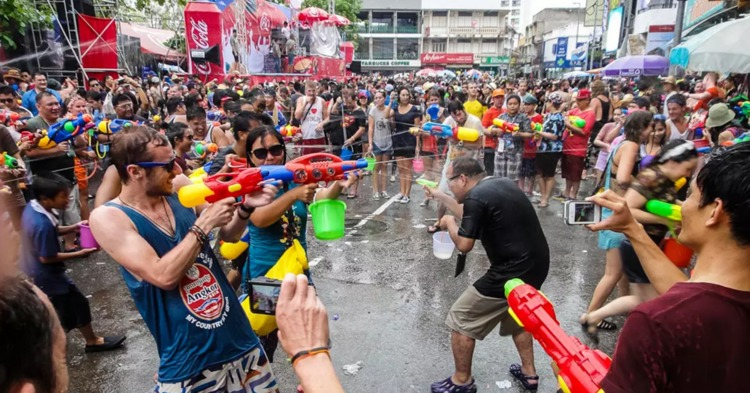
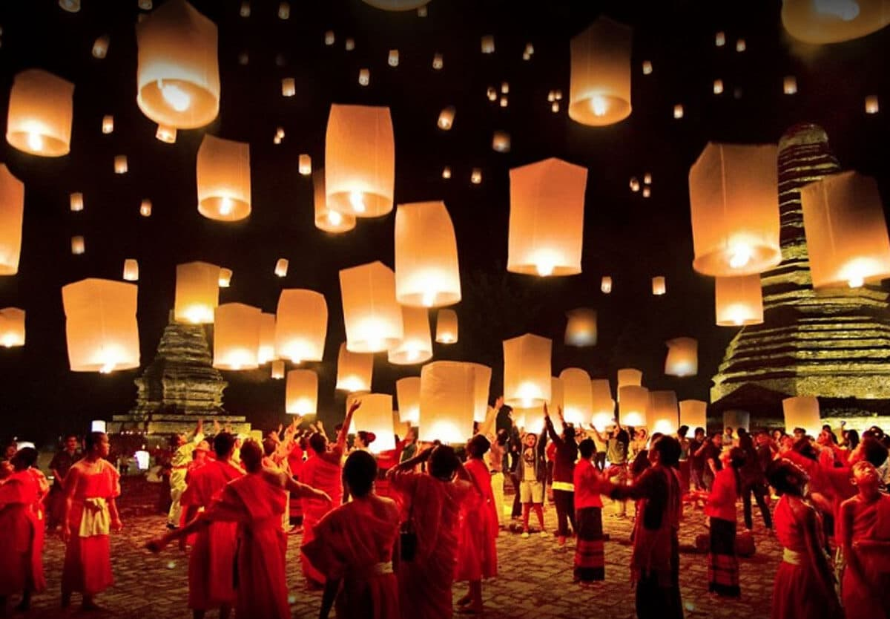
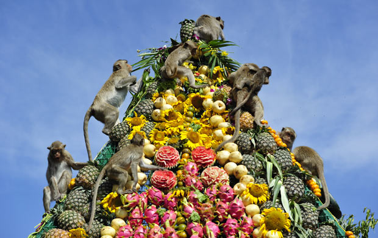

Events
Songkran Festival:
This is a water-throwing celebration that happens during Thai New Year. Songkran means ‘to move’ or ‘movement’ in Thai. This festival is determined according to the movement of the sun from one zodiac position (Pisces) to a new one (Aries) (Ho, 2024). Songkran Wikipedia Page
Loy Krathong Festival:
This festival is known as the Lantern Festival, celebrated alongside Loi Krathong. It usually takes place on the full moon night of November or December in the Gregorian calendar. People gather around temples and palaces to release sky lanterns and floating lanterns which represent good luck and blessings.(Cindy, 2024)
Lop Buri Monkey Banquet:
Lopburi is one of the oldest cities in Thailand and takes place at old Khmer ruins. Monkeys are a common sight in Lopburi, and many of them will gather for the feast offered during this festival.(Cindy, 2024b)
